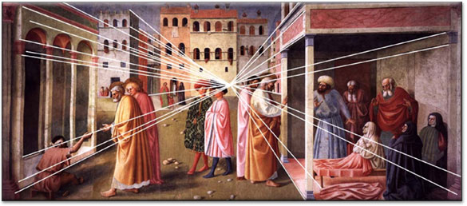
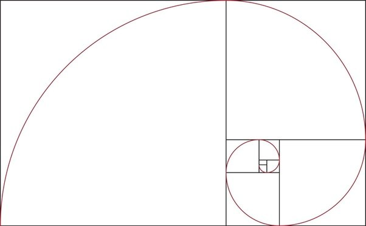
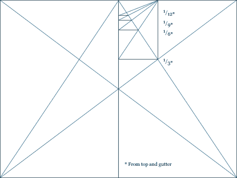
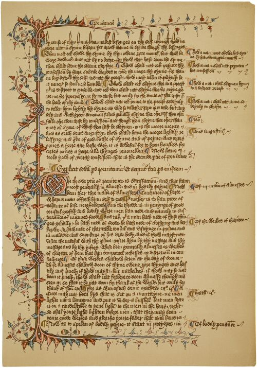
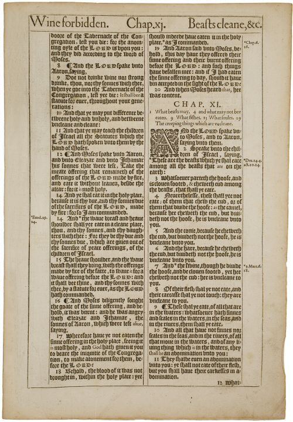
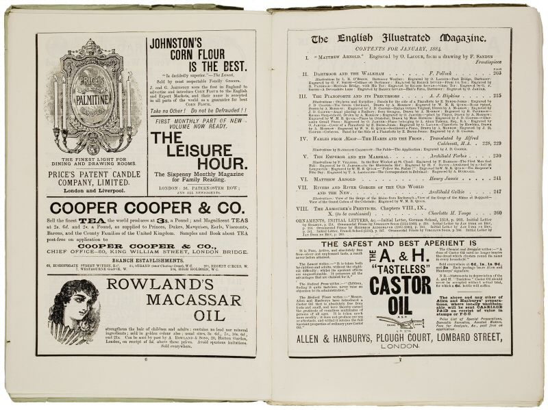
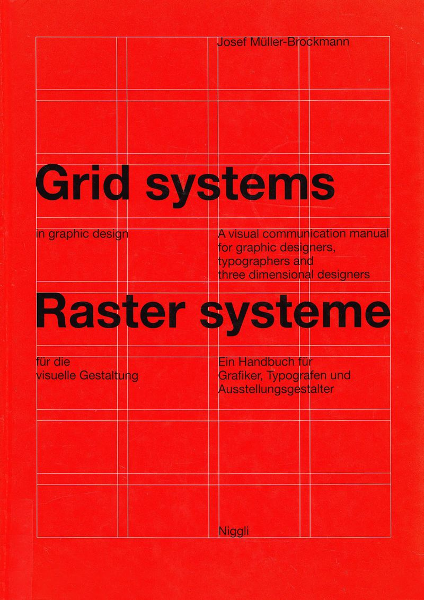

For most design processes, we start with a grid.
Why is the grid so important?
A grid creates simple organization for designers to organize information in a way that users will be able to quickly identify what they are looking for in a piece of media.
Grids can be as simple as box. They can also become very complex. Identifying the best grid for a design is often the beginning of the process.
Grids are based on mathematical principals like ratios and proportions. The use of mathematical principles to recreate physical space originated with Renaissance painting, when linear perspective was introduced.
Another mathematical principal used in design and art is the Golden Ratio, which describes two quantities where their ratio is the same as the ratio of their sum and the larger quantity. The Golden Ratio is still used by designer today to create harmonious layouts and designs.
A similar design was created in the 13th century, before the invention of the printing press, by Villard de Honnecourt, to define the margins of book pages.
You may not notice the grid margins of a book layout but these principals are used to make the design readable.
Book and manuscript design informs a lot of the web page grid design we see today. Before the printing press, simple grids were used with illuminated manuscripts to add notes in the margins.
With the introduction of the printing press and movable type, these grid designs became more complex and more visualized.
Industrialization and advertising led to even more complex layouts.
Eventually, the art of grid design was codified by the Swiss Style school of designers.
|  |
There are several terms we need to be familiar with to design a grid for wireframes and CSS implementation.
The
The
There are four basic types of grids.
The
A